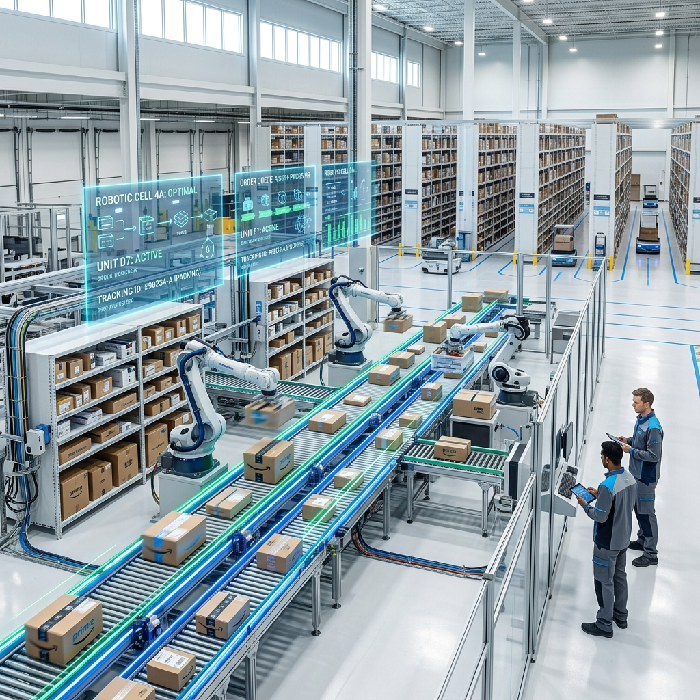
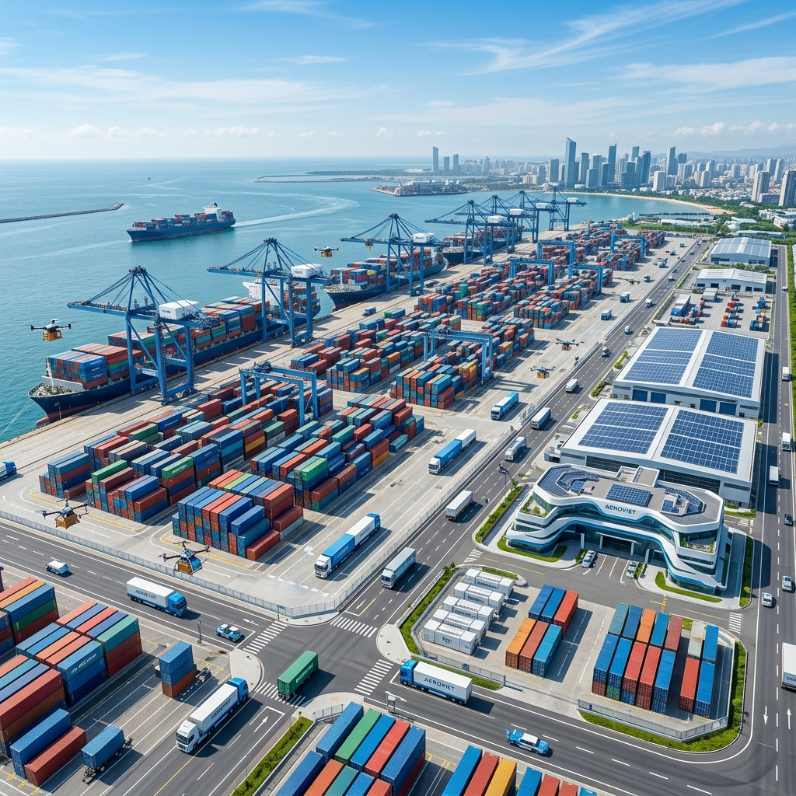

Tworzymy
Przyszłość Logistyki
Studenckie Koło Naukowe Logistyki to miejsce, gdzie teoria z zajęć spotyka się z praktyką. Rozwijaj swoje pasje i zainteresowania, poznawaj branżę TSL i zbuduj z nami innowacyjne projekty.
Dlaczego warto dołączyć?
KNL to inicjatywa zrzeszająca studentów Politechniki Lubelskiej, którzy chcą poszerzać horyzonty i zdobywać praktyczną wiedzę z obszaru logistyki, spedycji i transportu.
Magazynowanie i Technologie
Analizujemy nowoczesne rozwiązania w centrach dystrybucyjnych, automatykę magazynową i systemy WMS.
Globalny Łańcuch Dostaw
Zgłębiamy tajniki spedycji międzynarodowej, optymalizacji tras i zarządzania ryzykiem w transporcie.
IT w Logistyce
Uczymy się obsługi systemów ERP, analizy danych oraz modelowania procesów logistycznych.
Co będziemy robić?
Planujemy szereg inicjatyw, które pozwolą nam zdobyć doświadczenie niedostępne na standardowych zajęciach. Od wyjazdów, przez konferencje, aż po własne badania.
-
Wizyty Studyjne
Wyjazdy do najnowocześniejszych centrów logistycznych i terminali przeładunkowych.
-
Szkolenia Certyfikowane
Warsztaty z obsługi oprogramowania branżowego z ekspertami z rynku.
-
Konferencje Naukowe
Udział w wydarzeniach branżowych oraz organizacja własnych paneli dyskusyjnych na uczelni.


Kto za tym stoi?
Poznaj zespół założycielski Koła Naukowego Logistyki.
Jan Kowalski
Prezes KołaPasjonat łańcuchów dostaw i optymalizacji procesów. Odpowiada za koordynację projektów badawczych i strategię rozwoju KNL.
Anna Nowak
Wiceprezes ds. ProjektówEkspertka od zarządzania projektami. Organizuje wizyty studyjne i nadzoruje współpracę z kluczowymi partnerami biznesowymi z branży TSL.
Piotr Wiśniewski
SkarbnikCzuwa nad budżetem koła, pozyskuje dofinansowania na wyjazdy oraz dba o płynność finansową wszystkich naszych studenckich inicjatyw.
Dołącz do nas!
Zostaw swoje dane, a odezwiemy się do Ciebie w sprawie pierwszego spotkania organizacyjnego.
Lokalizacja
Wydział Zarządzania
Politechnika Lubelska
kontakt@knl.pollub.pl